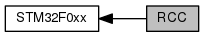

|
My Project
|
libopencm3 STM32F0xx Reset and Clock Control 更多...
|  |
宏定义 | |
| #define | _RCC_REG(i) MMIO32(RCC_BASE + ((i) >> 5)) |
| #define | _RCC_BIT(i) (1 << ((i) & 0x1f)) |
函数 | |
| void | rcc_osc_ready_int_clear (enum rcc_osc osc) |
| RCC Clear the Oscillator Ready Interrupt Flag. 更多... | |
| void | rcc_osc_ready_int_enable (enum rcc_osc osc) |
| RCC Enable the Oscillator Ready Interrupt. 更多... | |
| void | rcc_osc_ready_int_disable (enum rcc_osc osc) |
| RCC Disable the Oscillator Ready Interrupt. 更多... | |
| int | rcc_osc_ready_int_flag (enum rcc_osc osc) |
| RCC Read the Oscillator Ready Interrupt Flag. 更多... | |
| void | rcc_css_int_clear (void) |
| RCC Clear the Clock Security System Interrupt Flag. | |
| int | rcc_css_int_flag (void) |
| RCC Read the Clock Security System Interrupt Flag. 更多... | |
| void | rcc_wait_for_osc_ready (enum rcc_osc osc) |
| RCC Wait for Oscillator Ready. 更多... | |
| void | rcc_osc_on (enum rcc_osc osc) |
| RCC Turn on an Oscillator. 更多... | |
| void | rcc_osc_off (enum rcc_osc osc) |
| RCC Turn off an Oscillator. 更多... | |
| void | rcc_css_enable (void) |
| RCC Enable the Clock Security System. | |
| void | rcc_css_disable (void) |
| RCC Disable the Clock Security System. | |
| void | rcc_osc_bypass_enable (enum rcc_osc osc) |
| RCC Enable Bypass. 更多... | |
| void | rcc_osc_bypass_disable (enum rcc_osc osc) |
| RCC Disable Bypass. 更多... | |
| void | rcc_set_sysclk_source (enum rcc_osc clk) |
| RCC Set the Source for the System Clock. 更多... | |
| void | rcc_set_pll_multiplication_factor (uint32_t mul) |
| RCC Set the PLL Multiplication Factor. 更多... | |
| void | rcc_set_ppre (uint32_t ppre) |
| RCC Set the APB Prescale Factor. 更多... | |
| void | rcc_set_hpre (uint32_t hpre) |
| RCC Set the AHB Prescale Factor. 更多... | |
| void | rcc_set_prediv (uint32_t prediv) |
| void | rcc_set_mco (uint32_t mcosrc) |
| enum rcc_osc | rcc_system_clock_source (void) |
| RCC Get the System Clock Source. 更多... | |
| void | rcc_clock_setup_in_hsi_out_8mhz (void) |
| void | rcc_clock_setup_in_hsi_out_16mhz (void) |
| void | rcc_clock_setup_in_hsi_out_24mhz (void) |
| void | rcc_clock_setup_in_hsi_out_32mhz (void) |
| void | rcc_clock_setup_in_hsi_out_40mhz (void) |
| void | rcc_clock_setup_in_hsi_out_48mhz (void) |
| void | rcc_periph_clock_enable (enum rcc_periph_clken periph) |
| Enable Peripheral Clock in running mode. 更多... | |
| void | rcc_periph_clock_disable (enum rcc_periph_clken periph) |
| Disable Peripheral Clock in running mode. Disable the clock on particular peripheral. 更多... | |
| void | rcc_periph_reset_pulse (enum rcc_periph_rst periph) |
| Reset Peripheral, pulsed. 更多... | |
| void | rcc_periph_reset_hold (enum rcc_periph_rst periph) |
| Reset Peripheral, hold. 更多... | |
| void | rcc_periph_reset_release (enum rcc_periph_rst periph) |
| Reset Peripheral, release. 更多... | |
变量 | |
| uint32_t | rcc_core_frequency = 8000000 |
| uint32_t | rcc_ppre_frequency = 8000000 |
libopencm3 STM32F0xx Reset and Clock Control
This library supports the Reset and Clock Control System in the STM32F0xx series of ARM Cortex Microcontrollers by ST Microelectronics.
LGPL License Terms libopencm3 License
| int rcc_css_int_flag | ( | void | ) |
RCC Read the Clock Security System Interrupt Flag.
| void rcc_osc_bypass_disable | ( | enum rcc_osc osc | ) |
RCC Disable Bypass.
Re-enable the internal clock (high speed and low speed clocks only). The internal clock must be disabled (see rcc_osc_off) for this to have effect.
| [in] | osc | enum ::osc_t. Oscillator ID. Only HSE and LSE have effect. |
| void rcc_osc_bypass_enable | ( | enum rcc_osc osc | ) |
RCC Enable Bypass.
Enable an external clock to bypass the internal clock (high speed and low speed clocks only). The external clock must be enabled (see rcc_osc_on) and the internal clock must be disabled (see rcc_osc_off) for this to have effect.
| [in] | osc | enum ::osc_t. Oscillator ID. Only HSE and LSE have effect. |
| void rcc_osc_off | ( | enum rcc_osc osc | ) |
RCC Turn off an Oscillator.
Disable an oscillator and power off.
| [in] | osc | enum ::osc_t. Oscillator ID |
| void rcc_osc_on | ( | enum rcc_osc osc | ) |
RCC Turn on an Oscillator.
Enable an oscillator and power on. Each oscillator requires an amount of time to settle to a usable state. Refer to datasheets for time delay information. A status flag is available to indicate when the oscillator becomes ready (see rcc_osc_ready_int_flag and rcc_wait_for_osc_ready).
| [in] | osc | enum ::osc_t. Oscillator ID |
| void rcc_osc_ready_int_clear | ( | enum rcc_osc osc | ) |
RCC Clear the Oscillator Ready Interrupt Flag.
Clear the interrupt flag that was set when a clock oscillator became ready to use.
| [in] | osc | enum ::osc_t. Oscillator ID |
| void rcc_osc_ready_int_disable | ( | enum rcc_osc osc | ) |
RCC Disable the Oscillator Ready Interrupt.
| [in] | osc | enum ::osc_t. Oscillator ID |
| void rcc_osc_ready_int_enable | ( | enum rcc_osc osc | ) |
RCC Enable the Oscillator Ready Interrupt.
| [in] | osc | enum ::osc_t. Oscillator ID |
| int rcc_osc_ready_int_flag | ( | enum rcc_osc osc | ) |
RCC Read the Oscillator Ready Interrupt Flag.
| [in] | osc | enum ::osc_t. Oscillator ID |
| void rcc_periph_clock_disable | ( | enum rcc_periph_clken | periph | ) |
Disable Peripheral Clock in running mode. Disable the clock on particular peripheral.
| [in] | clken | rcc_periph_clken Peripheral RCC |
For available constants, see #rcc_periph_clken (RCC_UART1 for example)
| void rcc_periph_clock_enable | ( | enum rcc_periph_clken | periph | ) |
Enable Peripheral Clock in running mode.
Enable the clock on particular peripheral.
| [in] | clken | rcc_periph_clken Peripheral RCC |
For available constants, see #rcc_periph_clken (RCC_UART1 for example)
| void rcc_periph_reset_hold | ( | enum rcc_periph_rst | periph | ) |
Reset Peripheral, hold.
Reset particular peripheral, and hold in reset state.
| [in] | rst | rcc_periph_rst Peripheral reset |
For available constants, see #rcc_periph_rst (RST_UART1 for example)
| void rcc_periph_reset_pulse | ( | enum rcc_periph_rst | periph | ) |
Reset Peripheral, pulsed.
Reset particular peripheral, and restore to working state.
| [in] | rst | rcc_periph_rst Peripheral reset |
For available constants, see #rcc_periph_rst (RST_UART1 for example)
| void rcc_periph_reset_release | ( | enum rcc_periph_rst | periph | ) |
Reset Peripheral, release.
Restore peripheral from reset state to working state.
| [in] | rst | rcc_periph_rst Peripheral reset |
For available constants, see #rcc_periph_rst (RST_UART1 for example)
| void rcc_set_hpre | ( | uint32_t | hpre | ) |
RCC Set the AHB Prescale Factor.
| [in] | hpre | Unsigned int32. AHB prescale factor RCC_CFGR AHB prescale Factors |
| void rcc_set_pll_multiplication_factor | ( | uint32_t | mul | ) |
RCC Set the PLL Multiplication Factor.
| [in] | mul | Unsigned int32. PLL multiplication factor RCC_CFGR PLL Multiplication Factor |
| void rcc_set_ppre | ( | uint32_t | ppre | ) |
RCC Set the APB Prescale Factor.
| [in] | ppre1 | Unsigned int32. APB prescale factor RCC_CFGR APB1 prescale Factors |
| void rcc_set_sysclk_source | ( | enum rcc_osc | clk | ) |
RCC Set the Source for the System Clock.
| [in] | osc | enum ::osc_t. Oscillator ID. Only HSE, LSE and PLL have effect. |
| enum rcc_osc rcc_system_clock_source | ( | void | ) |
RCC Get the System Clock Source.
| void rcc_wait_for_osc_ready | ( | enum rcc_osc osc | ) |
RCC Wait for Oscillator Ready.
| [in] | osc | enum ::osc_t. Oscillator ID |
 1.8.11
1.8.11